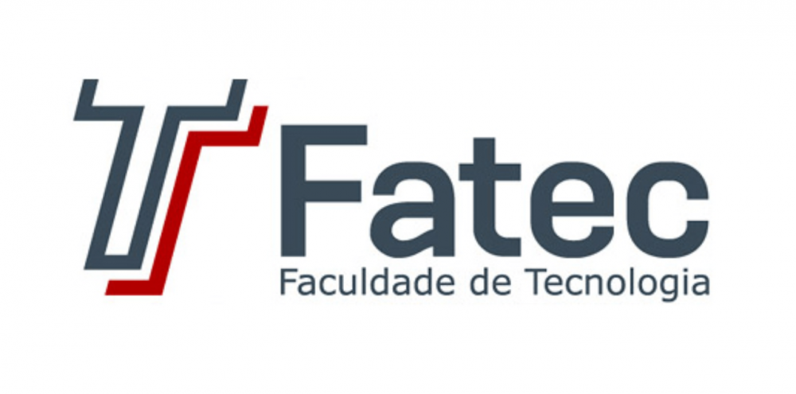
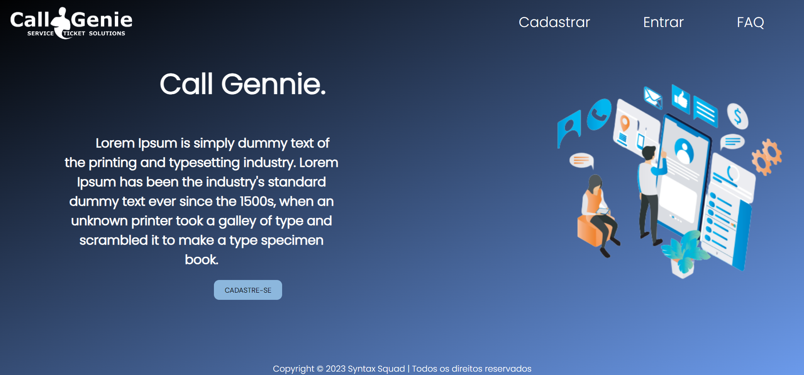
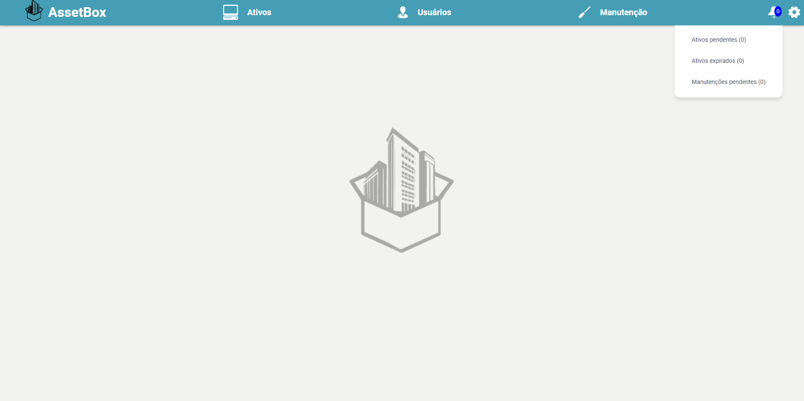
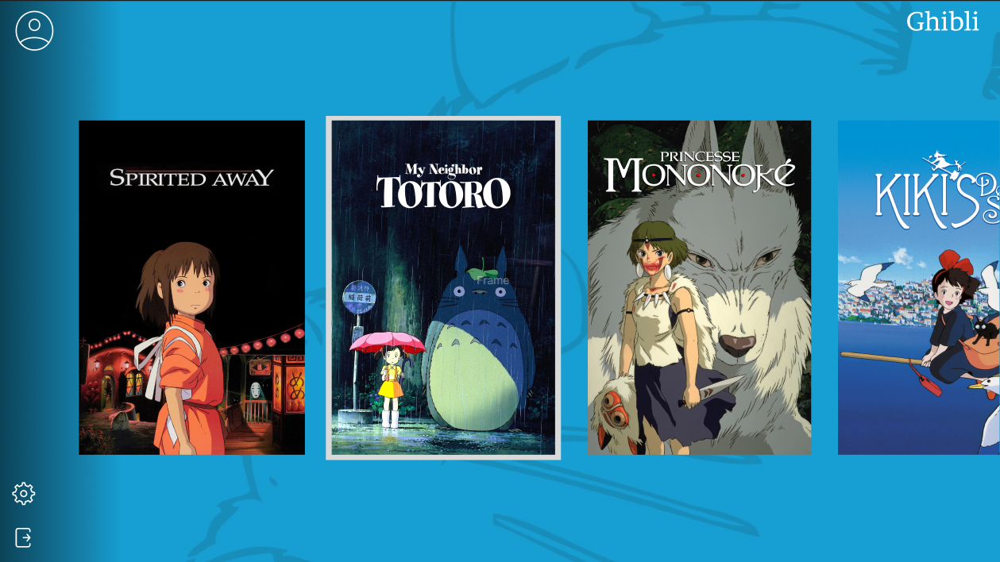
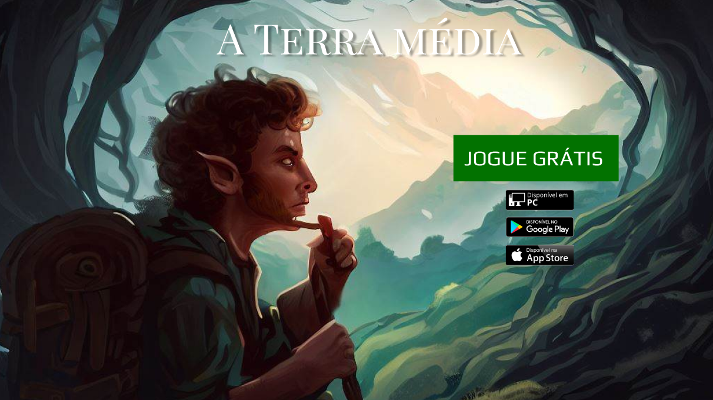

Bem Vindo(a)! Eu sou o João e este é um pouco dos meus projetos acadêmicos e pessoais. Sou Técnico em Desenvolvimento de Sistemas e já desenvolvi diversos projetos utilizando diferentes linguagens de programação, frameworks e também do Design.
Data-Sars: 2023-1

Parceiro Acadêmico

Visão do Projeto
Para jornalistas da Rede Vanguarda que desejam acessar, visualizar e analisar dados da COVID Longa, o "Data-SARS" é um site que permite um fácil acesso a informações relacionadas a COVID Longa. Ao contrário de alguns sites que propagam Fake News e que não possuem filtros de pesquisa, o nosso produto fornece os dados de maneira que seja fácil de entender e de analisar os dados, uma vez que nossos dados são autênticos e possuímos uma área de interação minimalista.
Atuei na prototipação no Figma, na criação do site com HTML e na estilização utilizando CSS
Contribuições Pessoais
Atuei na criação do site com React e na estilização utilizando CSS
Tecnologias Adotadas na solução
Flask| HTML5 | CSS3 | Python | Visual Studio Code | Docker
Aprendizados Efetivos HS
Prototipação com Figma, criação de sites com o microframework Flask e estilização de sites para diferentes navegadores.
CallGenie: 2023-2

Teste
Parceiro Acadêmico
Para empresas e companhias que buscam implementar soluções para gerenciamento de Chamados de Serviços, o "CallGenie" é um sistema CRUD que permite a melhor gestão dos chamados, contando com uma àrea de interação minimalista e documentos que auxiliam o usuário à usar o sistema. Neste projeto, implantamos o sistema para uma loja fictícia de informática, entretanto, nosso sistema pode ser implatado em qualquer área, contanto que exista a dificuldade de gestão dos chamados.
Contribuições Pessoais
Atuei na criação do site com React e na estilização utilizando CSS
Tecnologias Adotadas na solução
Javascript | Typescript | React | MySQL | Node | Sequelize | HTML | CSS | Figma | Visual Studio Code
Aprendizados Efetivos HS
Criação de sites com o framework React

Quando a empresa e seus ativos ainda são pequenos, soluções simples podem ajudar nesta gestão, no entanto, quando a empresa começa a crescer é necessário utilizar ferramentas mais completas. Uma gestão ineficaz destes ativos pode levar a empresa a perder dinheiro, ter seu crescimento prejudicado e tomar decisões mal embasadas, aumentando o risco de ter prejuízos. A gestão de ativos feita de forma cuidadosa e correta garante um bom desempenho destes recursos, melhoria em processos internos, redução de custos, aproveitamento de oportunidades, redução de riscos e assertividade na tomada de decisões. Dado este contexto, o sistema da AssetBox é uma solução web para auxiliar empresas nessa gestão.
Contribuições Pessoais
Atuei na prototipação com Figma
Tecnologias Adotadas na solução
Javacript | React | MySQL | Node | Spring | HTML5 | CSS3 | Figma | Visual Studio Code | Bulma | TailWindCSS
Aprendizados Efetivos HS
Utilização de bibliotecas de estilos como Bulma e TailwindCSS, que facilitaram muito a responsividade da aplicação.

Wireframes

